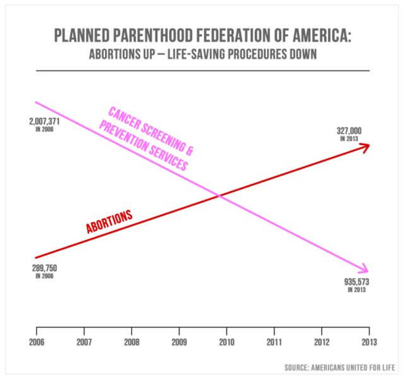
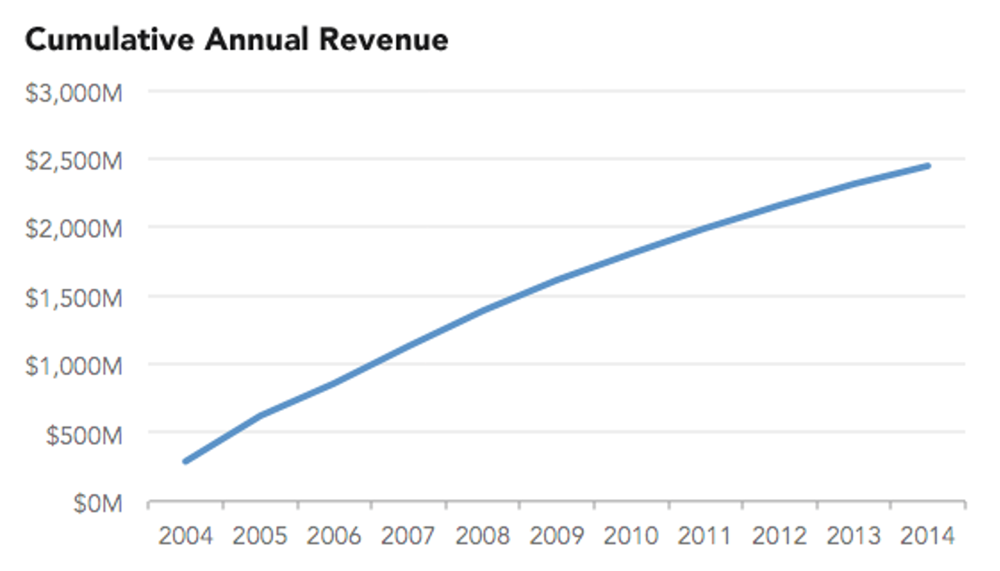
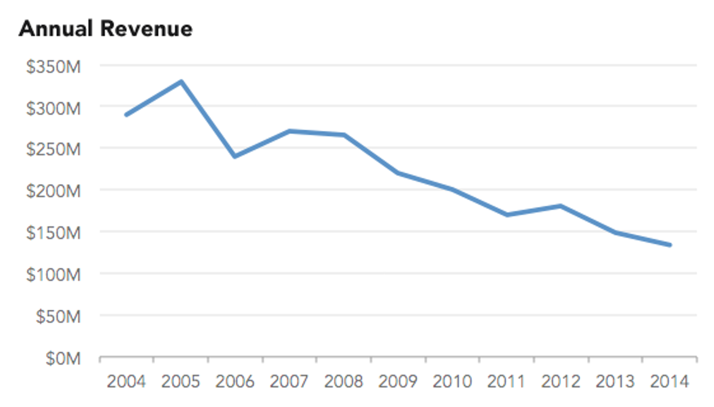
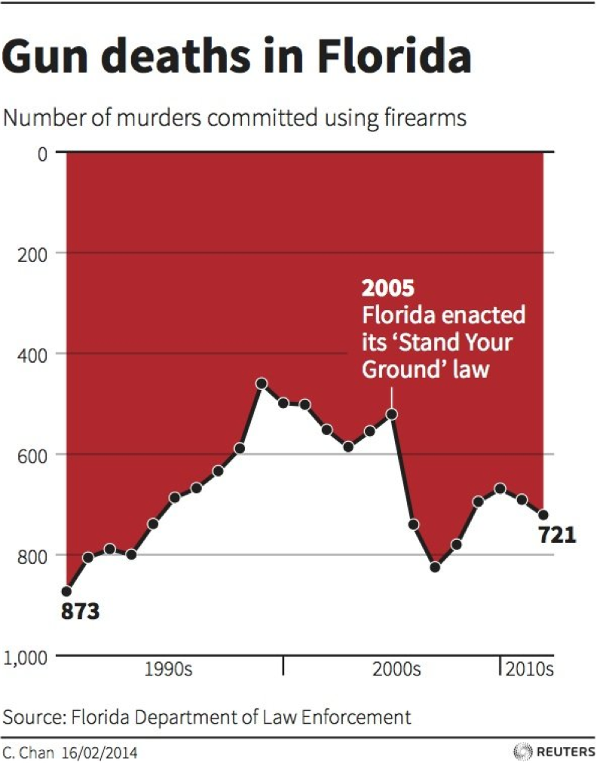
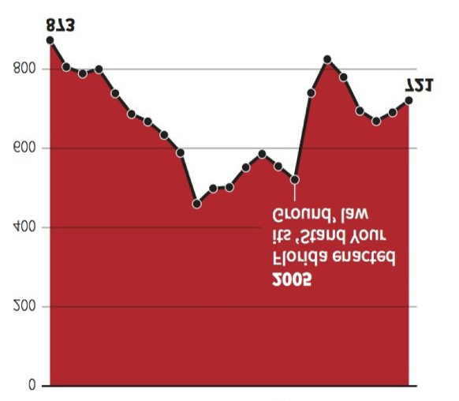

⚠️ Why Ethics Matter in Data Visualization
Data visualizations are powerful tools that can inform, persuade, and influence decision-making. With this power comes responsibility. Teaching students to create ethical visualizations is just as important as teaching them the technical skills.
"Ethical thinking is about not only intentions, but consequences."
- Alberto Cairo
Ethical data visualization is about:
- Honesty: Representing data accurately without distortion
- Transparency: Being clear about data sources and limitations
- Accessibility: Making visualizations understandable to diverse audiences
- Responsibility: Considering the impact of your visualization choices
🎯 Real Examples from the Wild
Here are actual examples of how visualizations can mislead - perfect for teaching students to be critical consumers of data.
Example 1: Truncated Y-Axis Makes Small Changes Look Huge

Left: Y-axis starts at 3.140% - makes tiny changes look dramatic! Right: Y-axis starts at 0% - shows changes are actually very small
Example 2: Cumulative vs. Annual Data
Cumulative Revenue

Always goes up - looks like continuous growth!
Annual Revenue

Shows the real story - peak in 2005, then decline
Example 3: Flipping Conventions
🔄 Misleading Chart

🔄 Fixed Version

The first chart flipped the y-axis so "down" visually represents "up" in the data - violating the basic convention that "up" means "more". The corrected version shows the data properly oriented.
Example 5: Pie Chart Math Doesn't Add Up
📺 Fox News 2012 Election Pie Chart
Sometimes the numbers literally don't add up:
- Romney: 70%, Huckabee: 63%, Palin: 60%
- Total: 193% (should be 100%!)
- Shows how 3D pie charts can distort perception
- Mathematical impossibility presented as fact
Always check if the numbers make sense!
📊 Truncated Y-Axis
Starting the y-axis at a value other than zero can make small differences appear dramatic.
- Makes tiny changes look like massive differences
- Often used in financial charts to exaggerate performance
- Example: Interest rates from 3.140% to 3.152% can look like huge growth
📈 Dual Y-Axes Manipulation
Using two different scales can create false correlations between unrelated data.
- Makes unrelated trends appear connected
- Scales can be manipulated to show any desired relationship
- Example: Spelling bee winners vs. spider deaths - pure coincidence!
📉 Cumulative vs. Annual Data
Mixing cumulative and annual data can mislead about actual trends.
- Cumulative data always goes up, hiding real patterns
- Annual data shows the true ups and downs
- Example: iPhone sales look amazing when cumulative, concerning when annual
🎨 Misleading Colors & Design
Visual elements can bias interpretation before viewers even read the data.
- Red/green combinations exclude colorblind viewers
- 3D effects distort proportions (pie charts)
- Inconsistent color coding confuses readers
🕒 Cherry-Picking Time Periods
Selecting convenient date ranges to support a predetermined narrative.
- Starting/ending at convenient points
- Ignoring important context (like economic recessions)
- Example: Florida gun deaths - showing data that supports your argument
🔄 Flipping Conventions
Deliberately violating expected visual conventions to confuse readers.
- Flipping y-axis so "down" means "up"
- Using unconventional chart orientations
- Violating color expectations (red for good, green for bad)